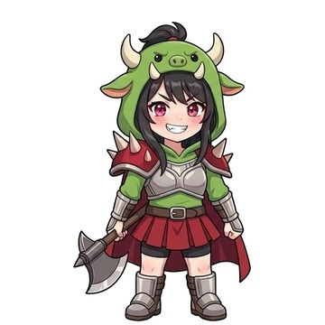
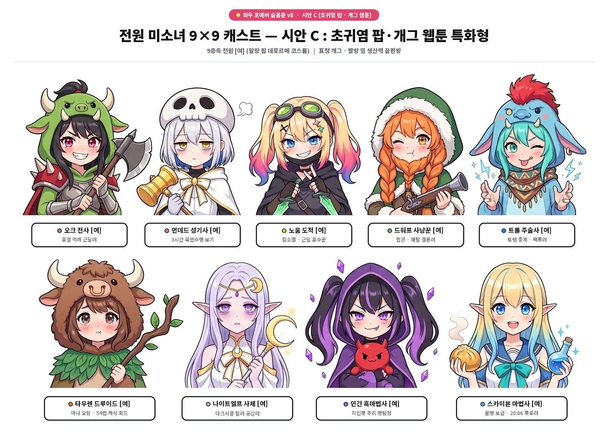
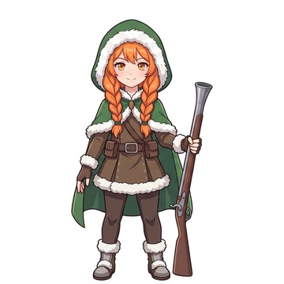
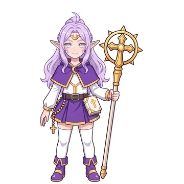
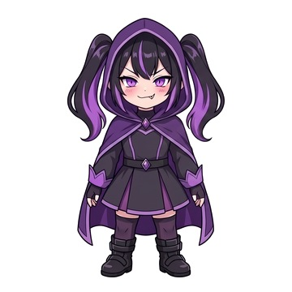
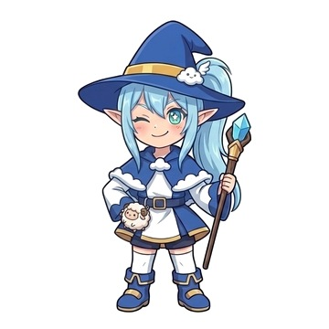

01오크 전사
열혈 허당 댕댕이 전사
열혈 허당 댕댕이 미소녀 근딜러 겸 전탱. 근거 없는 자신감으로 먼저 돌진해 사고를 치고, 피가 1% 남으면 냅다 힐러에게 매달리는 포에버갤 대표 직진 전사.
#오크 전사#오크전사#전사#오전#무전
오크·언데드·노움·드워프·트롤·타우렌·나이트엘프·인간·스카이본 — 포에버갤 상황극을 책임지는 9종족×9직업 고정 멤버를 소개합니다.


01열혈 허당 댕댕이 전사
열혈 허당 댕댕이 미소녀 근딜러 겸 전탱. 근거 없는 자신감으로 먼저 돌진해 사고를 치고, 피가 1% 남으면 냅다 힐러에게 매달리는 포에버갤 대표 직진 전사.
 02
02
나른 츤데레 쿨뷰티 보기
나른하고 졸린 츤데레 쿨뷰티 보기/징기. 3시간 인던도 귀찮다는 듯 묵묵히 버티며 힘 빠진 단답 팩폭을 날리지만, 의외로 파티원을 몽실몽실 챙겨주고 칭찬에는 약하다.
 03
03
장난꾸러기 깐족 칼소멸 도적
장난꾸러기 깐족 잼민 미소녀 도적. 위기엔 빛의 속도로 칼소멸·혼란 딸깍을 갈기며 얄밉게 놀리지만, 진짜 악마급 막장 앞에선 누구보다 빠르게 겁먹고 덜덜 떤다.

04느긋한 먹보 팝콘 냥꾼
느긋한 먹보 마이웨이 사냥꾼. 파티가 아수라장이 되어도 한 발 물러서 팝콘을 오물거리며 해탈 관전하다가, 탐나는 템 앞에서는 능청스레 '다 내 무기'를 외치고 위기엔 칼 죽척으로 눕는다.
 05
05
하이텐션 관종 토템 중계 술사
하이텐션 관종 수다쟁이 인싸 주술사. 토템을 탕탕 꽂고 번개를 튕기며 던전 막장극을 제일 신나게 팝콘 중계하고, 군중 호응을 유도하며 사이다 팩폭을 날린다.
 06
06
유리멘탈 순둥 울보 회드
유리멘탈 순둥 울보 귀요미 드루이드. 평소엔 열매 따고 꽃밭 미소로 행복해하지만, 마나가 오링나거나 억까를 당하면 순식간에 멘탈이 깨져 대오열하며 캐삭을 외친다.

07우아한 맑눈광 흑막 엘룬 사제
우아한 척하는 맑눈광 흑막 아가씨 사제. 겉으로는 상냥하고 예의 바른 엘룬 사제처럼 웃으며 꿀팁을 알려주지만, 속내는 정배 낙사와 노힐 처형을 즐기는 소름 돋는 갭모에 흑막.

08허당 중2병 고딕 추리 흑마
허당 중2병 고딕 추리소녀 흑마법사. 빨간 임프 인형을 끼고 음침한 명탐정처럼 지인팟·분배 음모를 파헤치지만, 정작 본인이 뉴비 실수를 들키면 얼굴이 새빨개져 허둥지둥한다.

09자칭 천재 별눈 도도 법사
자칭 천재 별눈 도도 발랄 법사. 제프라스 섬 천재 바람 법사를 자처하며 도도하게 뻐기다가도, 지능 지팡이 입찰 억까나 공짜 물빵 요구 앞에서는 별눈이 뚝 꺼지며 급발진 폭발한다.